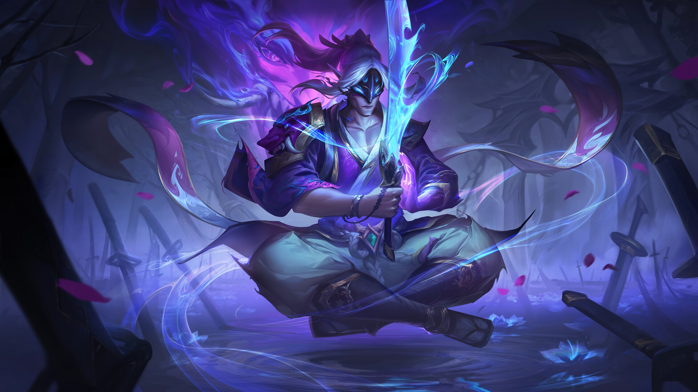

-
In Ionia's central province of Bahrl, a mountain settlement once stood, hidden away in its serene beauty. Here, in the village of Wuju, the boy Yi grew up learning the ways of the sword, chasing a dream that later turned to tragedy. Click here to read more.
-
-
Master Yi has tempered his body and sharpened his mind, so that thought and action have become almost as one. Though he chooses to enter into violence only as a last resort, the grace and speed of his blade ensures resolution is always swift. As one of the last living practitioners of the Ionian art of Wuju, Yi has devoted his life to continuing the legacy of his people—scrutinizing potential new disciples with the Seven Lenses of Insight to identify the most worthy among them. Click to read more.
